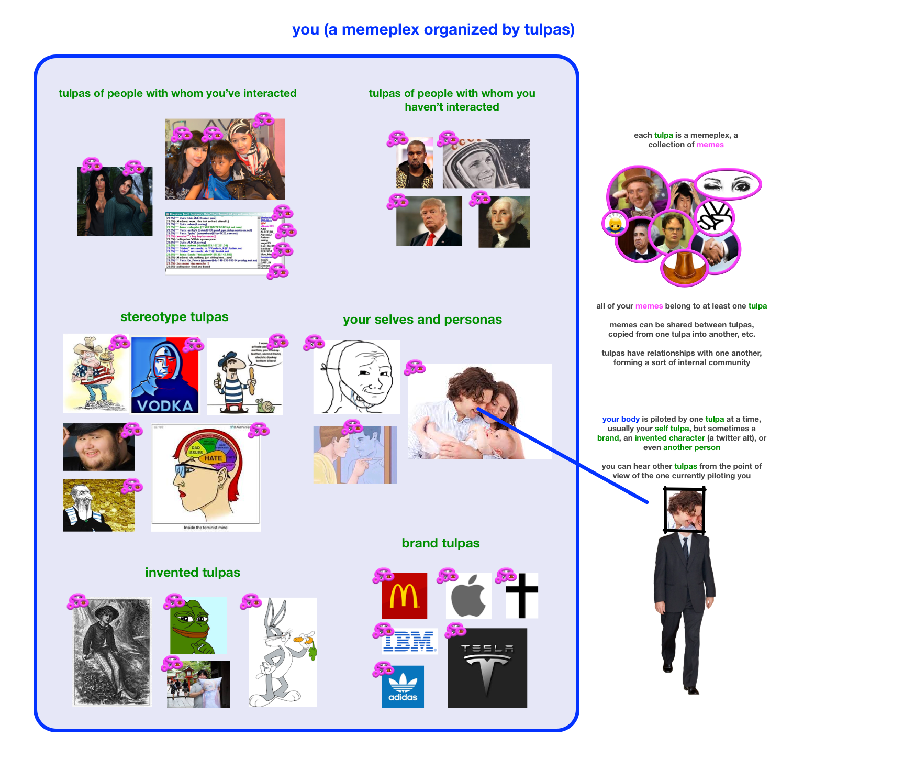

Memes are optimized and selected for inter-human spread and persistence, suggesting that they may also be good for intra-human spread and persistence. We explore the insight potential in carving our intra-personal memeplexes into tulpa shaped clusters.
[ Epistemic status: likely a shitpost ]
Visitors to this corner of the Internet are likely to already be familiar and comfortable with the appropriation of occult terms to refer to real psychological and sociological phenomena. You probably know about Scott Alexander's moloch, and about egregores. In this post, we talk about tulpas, which are like baby egregores. Autonomous imaginary friends that tulpamancers summons by subdividing their own minds.
The word tulpa, as used in this post, can be defined as a "mental model of a person-like entity". The occult terminology here is more than just a fun shorthand. We will attempt to take claims made about tulpas by Tibetan Buddhists, occultists, scientologists, and modern (secular) tulpamancers and usefully apply them to everyday mental phenomena. Without stretching the definition too much, we can say that people summon tulpas regularly without knowing it, and are hosts to an entire ecosystems of thoughtforms. We may even go as far as to view the individual as a collection of such thoughtforms. In other words: your mind is composed of nothing but tulpas.
In his Society of Mind, Minsky defines the mind as a "society of agents" - a collection of autonomous agents, each with an area of responsibility, and means of communication with other agents. In our tulpa theory of mind, each tulpa is such an agent. We are particularly interested in memetically transmitted agents such as models of other people, stereotypes, archetypes, fictional characters, brands, and selves. All of these would be classified as relatively complex agencies, themselves composed of smaller agents, in Minsky's society of mind. He also discusses smaller agents, which may not be part of person-like mental models. It's possible that such free-floating agents exist within the mind, but it's also possible that each of these mechanical agents necessarily belongs to one person-tulpa or another.
The term meme was defined by Richard Dawkins in The Selfish Gene as "a unit of cultural transmission".
A memeplex was defined by Susan Blackmore in The Meme Machine as "a collection or grouping of memes that have evolved into a mutually supportive or symbiotic relationship." A memeplex is a set of ideas that reinforce each other, roughly analogous to the symbiotic collection of individual genes that make up the genetic codes of biological organisms. Religions and cultures are memeplexes. In this post, we argue that individuals can also be thought of as a memeplexes.
A meme pool is a collection of interbreeding memes. Again, we argue that the individual mind is a meme pool.
Like egregores, tulpas are memetic entities. Beings composed entirely of memes, with no physical bodies of their own. Your tulpa of Donald Trump is made up of his various mannerisms, expressions that he likes to use, traits he appears to possess, etc.
Your friends, your barista, people you chat with online, a troll who left a mean comment on your blog, telemarketers
Interaction does not necessarily make a tulpa more detailed or more powerful within your mind!
Celebrities, people you see on the street, people in non-fiction media
Races, nationalities, religions, classes, genders, ages, groups of all sorts
You have more than one self! Some of these you identify this, some of these you show to others, and some (hopefully most) are both
Internet meme characters, cartoons, imaginary friends, waifus, characters in fiction media,
Tulpas are nebulous creatures, often blurring into one another without sharp borders.
Your tulpa of your Buddhist Korean-Canadian lesbian friend necessarily blends into the stereotype tulpas of Buddhists, Asians, Koreans, lesbians, women, and friends. It also blends into tulpas of brands which you associate with her, celebrities she reminds you of, other people, aspects of yourself, and fictional characters.
At certain times, while thinking of your friend, you may be actually thinking of memes belonging to one of the adjacent stereotype tulpas.
Another aspect of tulpa fuzziness is that you have multiple copies of each tulpa. These tulpas are so similar to one another and share so many of the same memes that it's generally most useful to think of them as a single entity, but sometimes the borders are sharp enough to be noted. You may have, for example, relatively separate tulpas for the same person as a friend, a colleague, and opponent in a chess game. These separations may or may not correspond to the divisions within their own minds (with a persona corresponding to each of your tulpas).
Lastly, there are some tulpas which straddle the borders between categories. For example, a person who passes by you on the street is somewhere between an interactive and non-interactive tulpa. A fictional character or celebrity can be used as a stereotype or a brand (as a mascot). A brand, stereotype, fictional character, or another real person can be used as a self. In fact, many tulpas start out as a copy of a tulpa from another category and then develop traits of their own.
In certain contexts, there will be unidirectional or bidirectional memetic flow between the tulpa of your friend and her adjacent tulpas.
So, your tulpa of your friend is regularly updated not only by real world interactions with her, but also by that tulpa's interaction with other tulpas within your mind. If you haven't seen your friend for a while in order to update your tulpa of her, it may be almost entirely replaced by memes from adjacent tulpas.
Stereotype tulpas are updated not only by information received from other people and by real world interaction with members of the stereotyped groups, but also by the behavior of your tulpas of members of those groups within your mind.
[ todo: write about the coalitions, feuds, status, prestige, etc. ]
Self-esteem is the reputation of the tulpa with which you identify the most at a given moment.
Here's a warning about tulpas from an anonymous contemporary occultist:
"It's a pretty sweet deal, except that you're enslaving a portion of your own soul which will later try to kill you."
Will later try to kill you? What's up with that?
Introducing a tulpa into your ecosystem is analogous to introducing a new member into a tribe. The new member will attempt to raise its status, and perhaps try to become the leader of the tribe. Depending on how your specific mental tribe functions, this may be a hostile takeover at the end of which your self (the tulpa with which you most closely identify) will lose status and may even be banished entirely.
{kind=link}